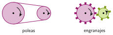
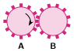

Poleas y engranajes
🤔 Pienso5 min
Qué hago aquí: Piensa un momento y contesta con lo que ya sabes. No pasa nada si no lo sabes: es para empezar.
Encaja dos engranajes del kit. Gira uno con el dedo hacia la derecha. ¿Hacia dónde gira el otro?
📖 Leo y aprendo15 min
Qué hago aquí: Lee despacio, mira los dibujos y los ejemplos, y quédate con la idea clave del final.
El motor gira. Pero ese giro tiene que llegar a las ruedas. Para eso sirven los mecanismos.

| Poleas y correa | Engranajes | |
|---|---|---|
| Sentido de giro | mismo | contrario |
| Distancia entre ejes | lejos | juntos |
| ¿Resbala? | sí, si está floja | no |
✏️ Hago25 min
Qué hago aquí: Haz las actividades en orden. Empieza siempre por las básicas.
Completa: dos poleas con correa giran en el sentido. Dos engranajes giran en sentido .
Dibuja una flecha en el engranaje B para indicar hacia dónde gira.

Escribe un objeto con poleas y otro con engranajes. Pista: piensa en la bicicleta o en un reloj.
Tres engranajes en fila: A mueve a B y B mueve a C. A gira hacia la derecha. ¿Hacia dónde giran B y C?
✏️ Puedes responder escribiendo, con un dibujo o un esquema, o contándolo en voz alta.
🚀 Amplío (si quieres saber más)
Qué hago aquí: ¿Has terminado? Lee la curiosidad o elige el reto. Es voluntario.
Un solo motor tiene que mover las dos ruedas traseras de un robot en el mismo sentido. Dibuja una solución con engranajes.
✅ Compruebo5 min
Qué hago aquí: Contesta sin mirar la ficha y marca cómo lo llevas.